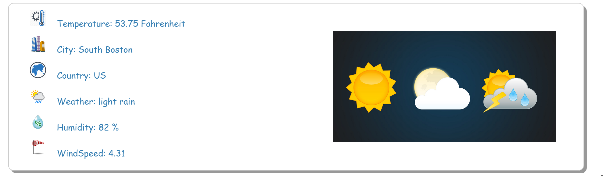

Climate Tab
Feature Screenshots

The Climate tab shows following data:
1.8 * (Kelvin-273)) +32 (found on following site:Kelvin-to-Fahrenheit)
Disclaimer: There is a current bug known for the feature above. Please refer the bug list for more details.
View HTML Source
View JS Source
- Temperature in Fahrenheit
- City (May locate county)
- Country
- Weather Details in short
- Humidity
- Windspeed
1.8 * (Kelvin-273)) +32 (found on following site:Kelvin-to-Fahrenheit)
Disclaimer: There is a current bug known for the feature above. Please refer the bug list for more details.
View HTML Source
View JS Source